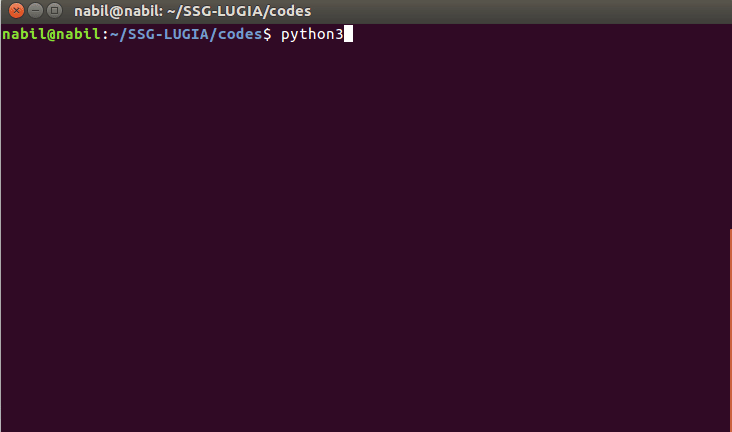

SSG-LUGIA: Single Sequence based Genome Level Unsupervised Genomic Island Prediction Algorithm
Genomic Islands (GIs) are clusters of genes that are mobilized through horizontal gene transfer. GIs play a pivotal role
in bacterial evolution as a mechanism of diversification and adaptation to different niches. Therefore, identification
and characterization of GIs in bacterial genomes is important for understanding bacterial evolution. However,
quantifying GIs is inherently difficult, and the existing methods suffer from low prediction accuracy and precision-recall
trade-off. Moreover, several of them are supervised in nature and thus their applications to newly sequenced
genomes are riddled with their dependency on the functional annotation of existing genomes.
We present SSG-LUGIA, a completely automated and unsupervised approach for identifying GIs and horizontally transferred genes.
SSG-LUGIA is a novel method based on unsupervised anomaly detection technique, accompanied by further refinement
using cues from signal processing literature. SSG-LUGIA leverages the atypical compositional biases of the alien
genes to localize GIs in prokaryotic genomes. SSG-LUGIA was assessed on the
IslandPick benchmark dataset, and on the well-understood
Salmonella typhi
CT18 genome. Furthermore, the efficacy of SSG-LUGIA in identifying horizontally transferred genes was
evaluated on two additional bacterial genomes, namely, that of
Corynebacterium diphtheria
NCTC13129 and
Pseudomonas aeruginosa
LESB58.
SSG-LUGIA takes an unannotated genome sequence as input and predicts GIs and optionally enlists putative horizontally transferred
genes in case a gene annotation file is provided. The genome sequence of interest is first split into overlapping
window frames that are then analyzed for the presence of GI distinguishing features compiled from publicly available
literature on GIs. The genome sequence is screened for “anomalous” regions based on GI distinguishing features
using an unsupervised machine learning procedure. The anomalous segments thus identified are further refined
following a post-processing step, and finally, the proximal segments are merged to produce the list of GIs (and
optionally, the list of horizontally transferred genes).
Our results indicate that SSG-LUGIA achieved superior performance in comparison to frequently used existing methods. Importantly,
it yielded a better trade-off between precision and recall than the existing methods. Its non-dependency on the
functional annotation of genomes makes it suitable for analyzing newly sequenced, yet uncharacterized genomes.
Thus, our study is a significant advance in identification of GIs and horizontally transferred genes.
The source code for SSG-LUGIA has been made open-source to aid the biologists in inferring genomic islands and horizontaly
transferred genes from newly sequenced genomes. To further facilitate there discovery SSG-LUGIA will be made
available as a web interface with a server application, along with portable cross-platform native applications
in coming days.
The source code for SSG-LUGIA can be found in the following github repository.
SSG-LUGIA provides a flexible way to use the pipeline as a command line interface
1. Clone the git repository.
$ git clone https://github.com/nibtehaz/SSG-LUGIA.git
2. Navigate to the
/codes directory
3. Import the SSG-LUGIA pipeline from the
main.py script.
4. Execute the SSG-LUGIA pipeline, using either a standard model (SSG-LUGIA-F, SSG-LUGIA-R, SSG-LUGIA-P) or a custom model configuration
(i) Input the path to the genome sequence and provide a standard model name
(ii) Input the path to the genome sequence and input the model parameters interactively

A cross-platform desktop app of SSG-LUGIA is under development and will be released soon.
If you have any queries regarding SSG-LUGIA project, please feel free to contact us.